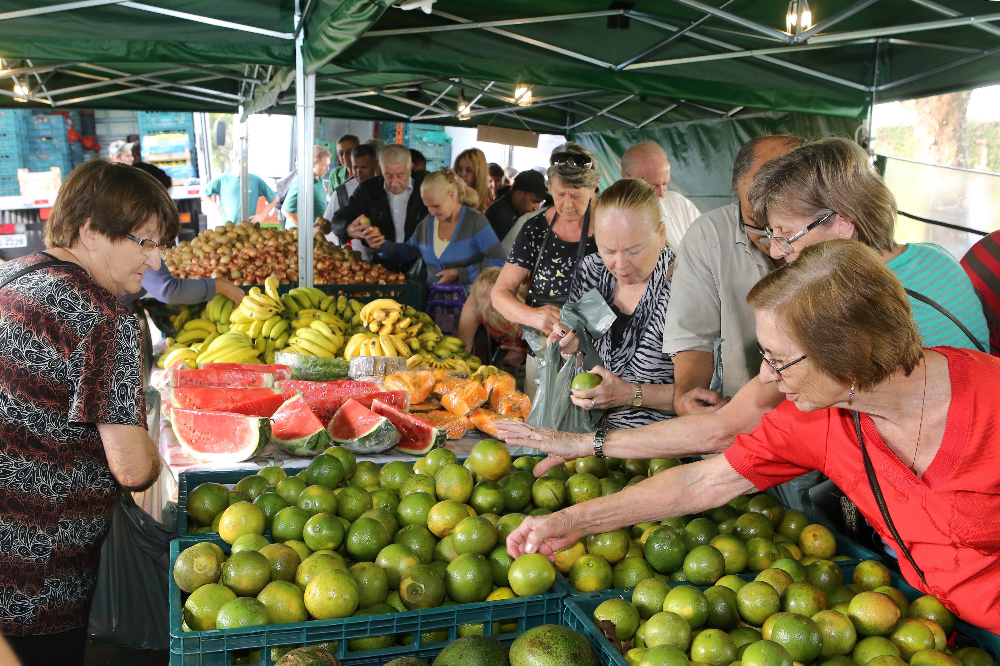

Conectando Vidas entre o Rural e o Urbano
As feiras de alimentos agrícolas são espaços muito importantes para a economia local, para os agricultores e para os consumidores. Elas aproximam o produtor rural do consumidor final, oferecendo alimentos frescos, saudáveis e, muitas vezes, mais baratos. Mas você já se perguntou como essas feiras são organizadas?
Tudo começa com o planejamento feito pela prefeitura ou por uma associação de feirantes. É preciso escolher o local da feira, os dias e horários de funcionamento, além de obter autorizações sanitárias e de uso do espaço público. Também é definido o número de barracas e os critérios para a participação dos agricultores.
Os produtores interessados em vender seus alimentos precisam se cadastrar e atender a certos requisitos. Em geral, dá-se preferência aos agricultores familiares e a quem cultiva produtos orgânicos ou agroecológicos. Eles devem comprovar a origem dos produtos e manter boas práticas de produção e higiene.
Em dias de feira, os feirantes chegam cedo para montar suas barracas. Cada barraca tem um espaço específico, organizado com base em um mapa previamente planejado para garantir circulação, segurança e acessibilidade. Os produtos são dispostos de forma organizada, para atrair os consumidores e facilitar a escolha.
Durante a feira, pode haver a presença de fiscais sanitários ou da organização da feira para garantir que os alimentos estejam em boas condições, frescos e bem armazenados. Produtos estragados ou mal acondicionados não podem ser vendidos. Isso assegura a saúde dos consumidores.
Ao final da feira, os feirantes desmontam as barracas e fazem a limpeza do espaço. Em muitas cidades, a prefeitura ou os próprios organizadores disponibilizam equipes para recolher resíduos e garantir que o local fique limpo para uso posterior.